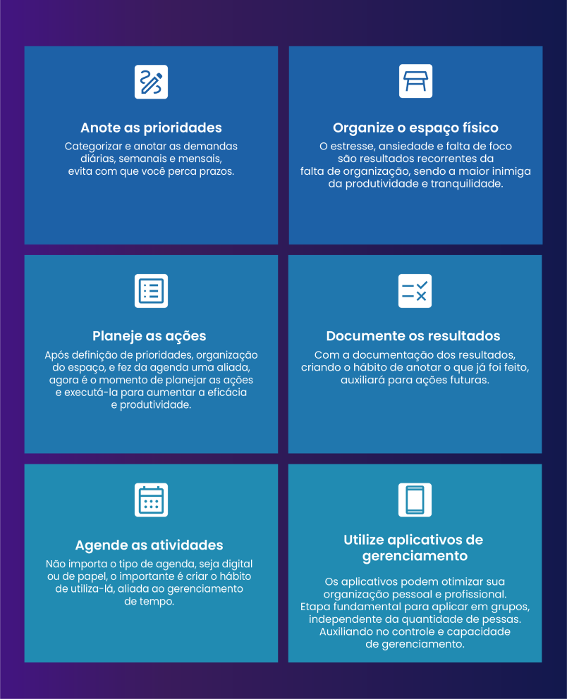

Tamanho da fonte
Acatar, com consciência e coerência, as premissas da autogestão nas suas atividades profissionais, considerando critérios de organização, disciplina, responsabilidade, concentração e gestão do tempo
Vamos iniciar os estudos
PlayAssista ao vídeo abaixo para uma introdução aos seus estudos
Como Cristiane deve utilizar os princípios de autogestão, para realizar todas as entregas necessárias dentro dos prazos, sem perder qualidade e sem abdicar do seu momento de lazer?
Utilizando a autogestão, que se refere a uma competência socioemocional, as pessoas tendem a ser mais eficientes, disciplinadas e orientadas para seus objetivos, sendo capazes de organizar seus compromissos e responsabilidades, a fim de cumprir com metas, agindo de maneira responsável e cidadã, realizando projetos e superando desafios do dia a dia, como por exemplo, a execução de diversas tarefas simultaneamente. Ela pode ser aprendida e desenvolvida por qualquer pessoa e é composta pelas capacidades de: responsabilidade, organização, concentração, disciplina e gestão de tempo.
Essas cinco competências são de grande importância para o cumprimento de tarefas, seja ela no âmbito profissional ou pessoal. Dessa maneira, é indispensável, para identificar os objetivos e acima de tudo alcançá-los.
A autogestão é uma competência que está presente dentro das macro competências socioemocionais, a figura a seguir mostra detalhadamente a divisão:
Você já parou para pensar que às vezes as horas, do dia, são mais curtas? Já teve a sensação de que o tempo parece estar passando de forma mais acelerada? Como se 60 minutos passassem mais rápido?
Frenético, é uma boa palavra para definir o tempo, pois a forma como temos vivido tem se tornado, cada vez mais, acelerada, uma rotina completamente preenchida com muitos compromissos e atividades para dar conta no decorrer do dia.
Não sei você, mas particularmente já observei que há pessoas que têm inúmeros compromissos, trabalhos e ainda conseguem investir em autocuidado e tempo para família, já outras vivem submersas com tanta coisa para dar conta que parecem até perder o fôlego. Por que será que isso acontece?
Como acabamos de assistir no vídeo anterior, percebe-se que o fato de viver, requer colaboração, a vida em comunidade, faz parte do propósito humano. Então, gerir o nosso tempo é vital para nosso avanço como pessoa.
Profissionalmente falando, é necessário gerir o tempo de tal forma que você não seja sinônimo do que você faz no trabalho, mas que o seu trabalho seja apenas uma porcentagem de quem você é. Ou seja, se ao se perguntar quem é você, sua primeira definição seja o que você faz para obter renda para viver é necessário refletir sobre.
Então como gerir o tempo profissional? Aqui vão algumas dicas que podem te ajudar:
Dentre as alternativas citadas, anteriormente, é relevante abordarmos com mais veemência a utilização de ferramentas para gestão do tempo, pois por meio delas você conseguirá gerir seu tempo de forma a realizar as atividades necessárias e ainda investir seu tempo livre na sua qualidade de vida pessoal e familiar.
Muitos dizem que tempo é dinheiro, porém é muito mais do que isso. Tempo é vida, e viver é muito mais do que sobreviver. E é o que você faz com seu tempo que determinará como tem sido sua vida em relação a qualidade e histórias a serem construídas.
Mas o que é uma ferramenta de gestão de tempo? São instrumentos que te ajudarão na organização do seu tempo de forma a tornar possível desempenhar várias atividades, sejam elas de cunho profissional ou pessoal. Existem inúmeras ferramentas de gestão de tempo como por exemplo:
Sim! A velha e boa agenda é um excelente começo para definir tudo aquilo que precisa ser realizado, planejar as atividades que você precisa fazer no decorrer do dia e ir riscando conforme forem sendo feitas, além de prazeroso te ajudará a definir bem suas metas. Mas lembre, caso não consiga realizar tudo, não se apavore ou se frustre, imprevistos acontecem, com o tempo você conseguirá mensurar com mais propriedade o que é possível ser realizado. A regra para todo bom planejamento é flexibilidade. Hoje além da agenda física há também a agenda virtual que sincronizada ao seu dispositivo móvel pode facilitar ainda mais a organização e produtividade do seu dia a dia.
Uma ferramenta visual muito utilizada na gestão à vista, possibilita organizar as atividades por prioridade classificando-as em três categorias, são elas: a fazer, fazendo e feito. Tais categorias ainda possibilitam o acompanhamento do progresso de cada atividade. Também está disponível no formato online.
A técnica ajuda na concentração do tempo, fundamenta-se em um ciclo produtivo em que a pessoa concentra sua atenção nas tarefas durante vinte e cinco minutos, após esse tempo, deve descansar por cinco minutos. Quando completa de uma hora e meia a duas horas de trabalho, o intervalo de descanso é de 15 a 30 minutos.
Atualmente, existem softwares e aplicativos em prol de facilitar a vida e organizar as atividades profissionais e pessoais de seus usuários, tais ferramentas tem como objetivo promover a qualidade de vida de seus usuários no sentido de ajudar na organização de suas vidas possibilitando o aumento da produtividade.
É possível refletir sobre gerenciamento de tempo com ótimos filmes, aqui estão algumas sugestões para você se atentar sobre este assunto:
Para estudantes, profissionais, das mais diversas áreas, como também para a maioria das atividades diárias, a capacidade de ter foco é fundamental. Apesar da extrema importância, nem sempre é fácil mantê-lo.
Mas afinal o que é foco?
De acordo com o dicionário online, o foco é: “ponto mais importante ou principal de; ponto central que
dá origem a; centro; ponto que recebe a convergência, que é alvo, de.”
Ou seja, é um objetivo em que se deve alcançar, e para isso requer a definição de metas, estratégias e concentração.
Imagine que você tem um carro que está muito sujo e necessita de uma limpeza. Imaginou? Pois, bem você decide que seu carro precisa ser lavado (idealização), mas necessitará partir para o planejamento e portanto a ação. Se você estiver apenas ciente de que seu carro precisa ser limpo e não agir em prol dessa limpeza estará vivenciando na prática a procrastinação, afinal como afirma o ditado popular é melhor o feito do que o perfeito.
Contudo, sabendo o que deverá ser feito, que no caso é a limpeza do veículo, você precisa planejar o dia da limpeza, se o serviço será feito por você ou se você vai levar para um lavajato de sua preferência. Além disso, precisará estabelecer qual dia realizará a limpeza; se tem os produtos e materiais necessários, caso seja você quem limpará, ou se tem o dinheiro, caso seja feito em um lava jato.
Concentrar-se então, é saber o que se tem para fazer, prever em que momento será feito, planejar, se preparar e portanto “colocar a mão na massa” para realizar a ação. Esse combo de decisões necessita de empenho em sua realização, para que não seja paralisado por distrações. As distrações são uma série de fatores inesperados ou não que podem atrasar ou evitar que a meta se torne tangível e é por isso que se faz necessária a aplicação da disciplina para manter-se concentrado em suas atribuições. O infográfico a seguir mostra dicas para manter a concentração nas suas atividades.
Ao pensarmos em um atleta que alcançou medalha de ouro em olimpíada, ou, paraolimpíada, logo pensamos na dedicação, abstenção e compromisso que essa pessoa teve para obter o resultado.
Resultados tangíveis são frutos de disciplina e perseverança, para isso faz-se necessário empenho e foco.
Uma pessoa que inicia uma atividade física para manter a saúde em dia sabe que a continuidade é uma das regras, afinal não adianta frequentar a academia uma vez por semana, comer tudo que deseja, querer perder massa gorda e ganhar massa magra, não é mesmo?
Seja qual for a atividade, física ou cognitiva realizada irá requerer de você:
Na vida profissional não é diferente, a disciplina é um fator fundamental para as entregas que precisam ser feitas, pois o alcance de resultados precisam ser conquistados degrau por degrau, num processo contínuo e ininterrupto. Por isso:
Você constrói a sua própria história!
De acordo com o dicionário on-line de português, Responsabilidade, é o “Dever de responder pelo próprio comportamento, pelas ações de outras pessoas ou instituições; [...] é perceptível que a responsabilidade está intrinsecamente ligada a uma ação diante de uma situação ou obrigação.’’ Ser responsável é, portanto, uma decisão diante de uma alternativa que requer sensatez no cumprimento de obrigações.
Há vários contextos possíveis para aplicabilidade da responsabilidade na vida, mas aqui, vamos focar na responsabilidade profissional.
Você se acha uma pessoa responsável para atuar profissionalmente? O que te faz definir sua responsabilidade ou ausência dela?
Para entender essa temática te convido a mergulhar comigo nas linhas a seguir, e se preparar, para entender as características que, se praticadas, te ajudarão a se tornar uma pessoa responsável.
Todo trabalho requer do trabalhador que entregas sejam feitas, tais entregas podem ser produtos ou serviços. Mas as entregas a serem feitas necessitam de uma qualidade mínima para que o ciclo de execução e consumo seja estabelecido, correto?
Vou te dar um exemplo para entender melhor esse “loop” entre execução e consumo, vamos lá? Clique no vídeo a seguir para assistir.
O vídeo mostra exatamente o ponto que queremos chegar, a irresponsabilidade no trabalho, seja ela no fornecimento de um produto ou na execução de um serviço gera uma insatisfação, além de paralisar o seu crescimento profissional.
Lógico que existem inúmeros exemplos de irresponsabilidade como: não entregar o documento no prazo, não comparecer ao trabalho sem justificativa, não cumprir as obrigações, não zelar pela organização e qualidade das entregas profissionais, disseminar contentas no ambiente de trabalho, entre outros.
Será que há dicas que podem me tornar um pouco mais responsável? Sim com certeza, mas uma coisa você precisa entender: a responsabilidade é um processo a ser construído e não uma mágica que te dará de uma hora para outra o título de profissional responsável.
Vamos portanto identificar algumas dicas que se aplicadas, continuamente, te possibilitarão galgar o caminho da construção da responsabilidade profissional
A primeira e principal dica está intrinsecamente ligada à forma de atuar profissionalmente, as soft skills não são adquiridas de um dia para outro e, sim, construídas cotidianamente ao longo da vida, é por meio do desenvolvimento dessas capacidades que se são formados valores como ética, trabalho em equipe, empatia, flexibilidade entre outro. E tudo isso para agirmos com amabilidade no desempenho das nossas funções, pois segundo MIchelle Schneider.
A primeira e principal dica está intrinsecamente ligada à forma de atuar profissionalmente, as soft skills não são adquiridas de um dia para outro e, sim, construídas cotidianamente ao longo da vida, é por meio do desenvolvimento dessas capacidades que se são formados valores como ética, trabalho em equipe, empatia, flexibilidade entre outro. E tudo isso para agirmos com amabilidade no desempenho das nossas funções, pois segundo MIchelle Schneider.
A responsabilidade profissional requer organização seja das metas, do tempo, do ambiente, de arquivos, enfim dos aspectos relacionados à função desempenhada, pois por meio dela é tangível a realização das metas estabelecidas.
Seja flexível, mas saiba se posicionar, o planejamento está sujeito a implicações que podem levar às alterações, saber entender isso é fundamental como também aceitar sugestões, porém também saiba manter seu posicionamento, o equilíbrio entre ceder e manter seu ponto de vista reflete a marca de decisões flexíveis.
Se empenhar em suas ações rotineiras reflete características de uma pessoa comprometida, pois a dedicação a uma ação irá requerer qualidade, cumprimento de prazos resultando em entregas satisfatórias.
Anote as dicas e, diariamente, incorpore-as na sua rotina. Com perseverança você se tornará mais responsável.
Para falar de autogerenciamento de carreira requer primeiro entender a definição do que é carreira profissional. De acordo com CHIAVENATO (2010) “[...] significa a sequência de posições e atividades desenvolvidas por uma pessoa ao longo do tempo em uma organização”. É certo que ninguém nasce sabendo, cada habilidade do ser humano é desenvolvida no decorrer da vida, para isso é necessário maturidade e experiência.
Mas, como obter experiência sem oportunidade, não é mesmo? É por isso que o primeiro emprego de uma pessoa é algo memorável, considerando que a inexperiência é impulsionada pela força de vontade em aprender. Sendo assim, a partir das primeiras oportunidades, a pessoa colaboradora vai realizando uma autoanálise em que reflete seus pontos de melhoria e necessidades de investimento.
Por isso, há a necessidade de qualificar-se por meio dos estudos, pois, a mobilização do conhecimento com as habilidades, as atitudes e os valores de forma progressiva farão de você uma pessoa competente.
Há um provérbio popular que diz: “o trabalho dignifica o homem e a mulher”. Mas porque será? Realizar um trabalho além de ser umas das principais fontes de renda de uma pessoa, é também uma oportunidade de desenvolvimento pessoal, é por ele que potencializamos o que desenvolvemos e, assim, tornamo-nos capazes e consequentemente nos sentimos úteis, o trabalho dignifica pelo fato de te fazer sentir-se útil. As pessoas desejam se sentirem importantes, naquilo que fazem, principalmente quando o fazem com qualidade.
Hoje, existem inúmeros formatos de trabalho em que resumimos em formais e informais, cada nova oportunidade traz consigo um aprendizado e a partir do momento em que a pessoa vai vivenciando novas experiências, consequentemente vai construindo sua carreira, que é muito mais do que está descrito no seu currículo, mas fala de quem você é após um trabalho, quais seus anseios profissionais e de que forma você pode e deseja contribuir?
Antes, o gerenciamento de carreira era feito pelas próprias organizações por meio de um plano de carreira, principalmente por serem altas e verticalizadas como afirma CHIAVENATO (2010) , mas hoje “[...] com as organizações achatadas devido ao enxugamento dos níveis hierárquicos, o encarreiramento está se tornando cada vez mais horizontalizado”.
O que antes era papel das organizações, cada dia mais tem se tornado papel da própria pessoa colaboradora, os planos de carreira que preparavam para cargos mais altos, dão lugar ao autogerenciamento de carreira, em que cada um tem se tornado responsável por sua própria progressão.
“
Agora quem precisa se preocupar com a carreira não é mais a organização. Essa incumbência está rapidamente passando para as mãos de cada pessoa. Em outras palavras, cada pessoa é que deve administrar sua própria carreira profissional e saber como ajustá-la continuamente às demandas e exigências de um mundo em rápida mudança e transformação. (CHIAVENATO, 2010, p. 227)Por isso, é essencial atualizar-se constantemente, está de olho nas exigências do mercado, verificar as atualizações referentes a sua profissão, organizar-se e administrar o seu tempo de forma a sempre investir na sua vida profissional. Dicas importantes, evite a procrastinação e neutralize ameaças, faça delas oportunidades para não baixar a guarda, mas ao invés disso que o que deseja te paralisar seja uma ferramenta propulsora para que você avance, dê o seu melhor, seja sempre sua melhor versão e que qualidade seja seu lema profissional.
Se liga aí! Currículo físico não é o único meio de se candidatar a vagas profissionais. A utilização da rede social LinkedIn é uma ótima oportunidade para crescimento profissional, desenvolvimento de habilidades e aumento de networking. Inclusive, por meio dessa rede você pode conseguir trabalhos freelancer ou até mesmo home office na sua área de atuação. Então, se você ainda não tem cadastro nessa rede social, acesse o link: https://www.linkedin.com
Você conseguiu perceber o quanto a organização é necessária para possibilitar o alcance de uma meta? E que se não houver um planejamento, metas bem definidas e organizadas, desperdiçamos esforços à toa? Muitas vezes o cansaço da nossa rotina se dá devido a ausência de organização.
Imagine que você vai pintar a parede da sua casa. Você compra a tinta e um pincel, daí na hora de pintar percebe que precisa da lixa, portanto saí para comprá-la, quando volta e vai iniciar a pintura analisa que o rolo seria mais viável que o pincel e precisa sair novamente, enfim, se não houver organização por meio de um bom planejamento, seus esforços serão desgastantes e o que poderia ser realizado em quatro horas pode levar até dois dias?
Ser organizado é buscar conquistar os seus objetivos de forma planejada utilizando os recursos e tempo que lhe são disponíveis. Em todos os setores da nossa vida, a exemplo da entrega de um trabalho, receita de bolo, planejamento de um roteiro de viagem, quando não utilizamos bem essa capacidade, nos resulta na geração de esforços desnecessários.
Quando vamos com muita sede ao pote, ou buscamos finalizar o trabalho com muita rapidez e sem paciência, esquecemos de planejar e somos capazes de passar por cima de detalhes importantes, sem perceber que tudo está ao nosso alcance quando há a aplicação da organização e do planejamento. É necessário passar por uma melhoria organizacional para que haja execução qualitativa de metas profissionais e pessoais. A definição correta de horários, limites, qualidades, e espaços são alguns dos pontos importantes para se ter sucesso na realização das tarefas. Em caso específico de um líder de equipe, é necessário que esses pontos se estendam para todas as pessoas envolvidas.
A seguir, é apresentado alguns pontos importantes para uma boa organização, na vida pessoal ou profissional, sendo elas:
Nos sites e lojas de aplicativos é possível encontrar diversos aplicativos de gerenciamento. A seguir te apresentaremos alguns que possam te auxiliar: TickTick: Lista de tarefas, lembretes e calendário Evernote: Organizador de notas Mini Hábitos: Rotina, hábito e tarefas diárias Focus To-Do: Timer pomodoro e lista de tarefas
Verifique se você conseguiu absorver o que foi apresentado, nesta UE, associando a coluna da direita à coluna da esquerda. Clique e arraste os blocos da coluna direita para cada conceito correspondente:
Prender a atenção apenas aos pontos importantes para completar o que precisa ser feito, evitando distrações.
Coordenar o tempo em relação às suas atividades, bem como se planejar para o futuro.
Arranjo sistemático para atingir os objetivos desejados, através de função, ordem e finalidade.
Estabelecer objetivos e motivações claras para executar as tarefas, se entregando por inteiro, não apenas o mínimo.
Realizar as tarefas, cumprindo os compromissos assumidos, apesar da dificuldade, sendo necessário comprometimento com a tarefa como um todo, para além de nossos interesses individuais.
Quase lá, você acertou 1/5. Tente novamente!
Parabéns, você acertou todas!

Solução do problematizando